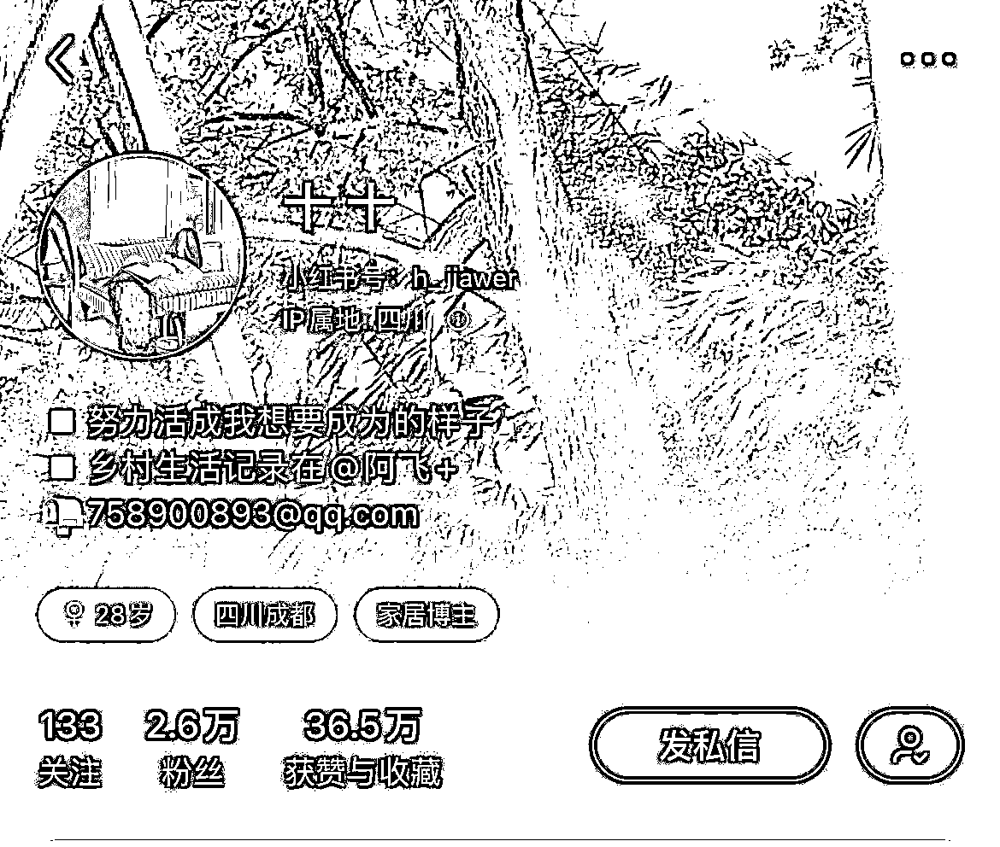
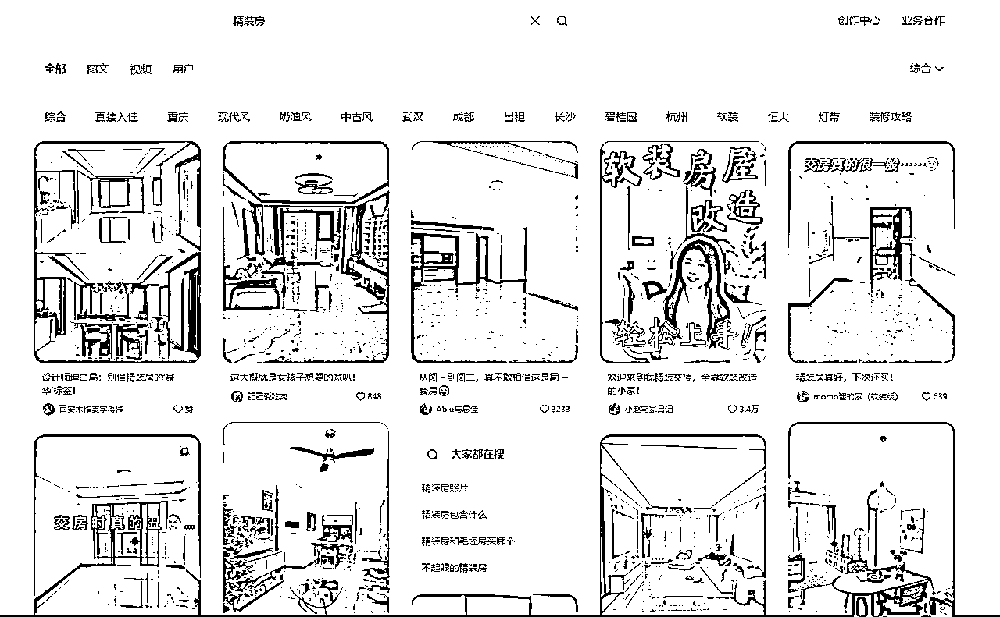
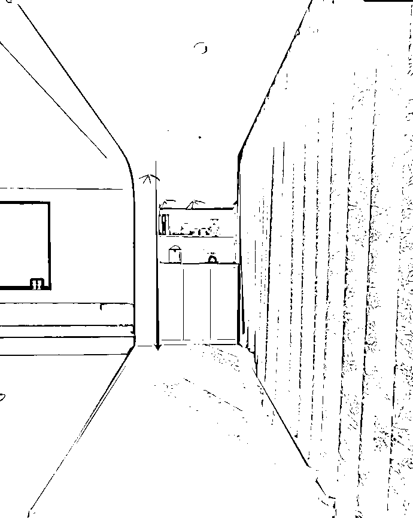
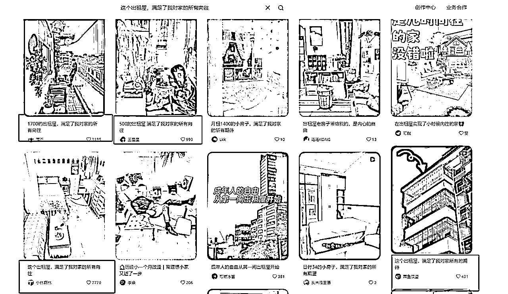

来源：https://p0962rpnyyw.feishu.cn/docx/YXIWdYygvoBVUnxrrEDcXHlEnce
大家好我是柠檬。
截止到目前，我全职做小红书博主已经三年，全网粉丝10万+，大号主要以读书，女性成长和个人IP为主，目前8万粉，小号家居号也已破万。
4年前，女儿一岁半，经历了一段白天上班晚上带娃的状态，很多时候，早上我出门女儿还没醒，晚上八点我到家女儿已经睡着了。很煎熬......也正是这段煎熬的日子让我下决心想要去改变。
我开始尝试做小红书，在试过美食、穿搭、亲子vlog等赛道的时候，迟迟没有找到稳定的决心，数据也没有特别大的突破。
直到无意间发现分享书籍也能做博主后，我认定这就是我想要去做的，日更了近20天后，爆了一篇笔记，涨粉3000+。 由此，便开始了我的博主生涯。在这期间，我依旧是白天上班，晚上陪女儿，但此外，还利用中午午休和晚上哄睡完女儿之后的时间去完成写作和拍摄。半年后，粉丝涨到2万的时候，我做博主的收入赶超了主业，于是，我果断辞职，开始了自由职业的生涯。
彼时，女儿也开始进入幼儿园，借着搬家的契机，我花了500元额外租了一间公租房，为的是把工作和生活彻底分开，也正是在这间40平的出租屋里，我又有了一个新的身份——家居博主。账号以家居软装布置分享为主，伴随着“出租屋改造“这个噱头，数据走势非常好。而且令我没有想到的是，家居赛道的变现效果远远超过粉丝高于它8倍的读书账号。
（刚搬进来的出租屋长这样）
大到沙发、柜子、冰箱、床垫、茶几、书架等，小到香薰、咖啡机、扫地机器人、电风扇、地毯等，甚至连锅碗瓢盆，我都合作了不知道多少，种类涵盖于家具家电和日常用具，合作产品真心接到手软。
也就是在这个账号里，为我带来上了千次接广合作，直接变现产品价值+稿费合作40W+。
很多人会觉得那前期是不是需要自己去购买布置的家具和软装，这又是一笔不小的花费，但实际上，我是靠着接广得来的产品一点点布置起来的，一些布置的实拍案例给大家看看：
（以上为刚开始的出租屋场景和2024年中旬搬家之后的场景）
同样的改造套路，我换场景重新做了一次，依旧可行，而且是直接在同一个账号上去做的改变调整，也并没有耽误接广变现。
且每一次改造所用到的家具和软装产品，皆是用合作到手的产品去发挥出来的，肉眼可见的吊灯、台灯、床垫、沙发、地毯、柜子、甚至是书籍和绿植，哪怕是地上的软垫，都是合作得来的产品。
我以合作得来的产品，打造了一个又一个拥有变现力的场景，不是因为我的审美基础和运营能力，而是家居场景本身自带的场景变现潜力，决定了在家居生活这样的场景里面，包含了我们生活日常几乎可以涵盖住的所有产品。
家居赛道的核心逻辑其实非常简单，旨在分享家居布置软装分享、硬装干货经验、分享日常住所的氛围感等，抓住这三个点，基本上就能掌握家居赛道的核心内容。而家居赛道的拍摄也非常垂直单一，因为场景不变，也就意味着只需要来来回回去拍家里的各个空间场景，需要改变的只是选题和文案，所以对素人来讲是非常好上手的。
我当初做家居赛道的契机，在于当我给自己花500元租了一间工作室后，不想浪费这样的空间，于是又起了一个号专门分享家居内容。一间40平的空房，在没有任何家具的情况下边布置改造边接广，正是因为有了这样前后的差异化，所以才非常容易做看点噱头。
而对于普通素人来说，只要有自己的住所，完全也能够复制我的模式，关键点就在于如何找到家居场景所在的看点噱头。一旦找准流量密码，账号变现也就轻而易举了。
新手最容易被限制住的，大概率就是环境问题了，箭在弦上，但是，具体拍什么呢？
其实很多时候，是大家把起号想象的太难了，因为我们刷到的账号已经是成熟期的账号，无论从审美力还是变现力去看，都完美的无可挑剔。所以很多人还没开始就被吓怕了——我家太丑了，我审美不行，我拍不出来,怎么可能会有品牌方找我打广告……
新手的环境问题无法解决，但是，我们可以从展示细节去下手。哪里拍不了我们就隐藏哪里，要学会遮丑。比如卧室收拾收拾还能拍，那就不要去拍客厅，一点一点去扩展区域，随着你的审美提高，布置展现力也会更好。
我当初就是只从卧室开始拍起，直到产生了更大的欲望，想要去接沙发这种适合放在客厅的大件家具，才把场景从卧室扩展到客厅外面来。所以，只需要顾好眼前，当下能拍什么就大胆去拍，哪怕只是一个小角落，一张小书桌。去利用环境，而不是被环境限制。
但凡是做自媒体的，没有几个不被数据折磨得死去活来，焦虑是常态，所以心态很重要。很多时候，时间和心态会淘汰掉一部分不适合做自媒体的人，而这一类人，往往就是心态出了问题。
我遇见过只更新一篇笔记就抱怨为什么还不火的人，也见过做了一年账号依旧没有起色的人。前者太焦灼，后者太淡定。数据有起伏是必然，心态也需要起伏，但却不能波动太大。三篇笔记里，数据持续低迷，就要开始思考出路，尝试新的选题；但不是只发了三篇笔记，就开始抱怨自媒体难做，任何事情都有过程，要接受并允许其发生。
做自媒体，深耕内容，沉得住气，才是关键。
探索新的事物就像种花一样，需要耐心和时间去照料的，不要因为一直没有看到成果就心急放弃了。
记得之前小红书上流行过一句话——100篇内必出爆文。
所以，不要输在第99篇上，光是坚持这一点，就能帮你淘汰掉大半竞争对手。
缓慢前行，比止步不前要好太多。行动起来，你会看到自己从小白变成入门，从零基础入门变成专业博主。
选择一个平台和一个赛道，一定要对这个平台上的该赛道了如指掌。所以，前期必不可少的就是在小红书上了解不同的家居风格，掌握各种风格的特点、色彩搭配、常见元素，学习家居收纳技巧、空间布局方法、软装搭配原则等基础知识，以便为你打造来积累知识储备。
搜索的时候会有很多下拉词，都是可以参考的关键词。也可以根据自己的爱好直接进行关键词搜索，以便于更快速地找到自己想要了解的账号和内容。
掌握基本的摄影知识，如构图、光线运用、色彩搭配、添加字幕、基本操作，我自己平时用的P图软件：黄油相机（小红书80%的字体基本上都有）醒图（给图片调色都用这个）。
类似的教程小红书上也有很多，可以自行搜索学习和练习，对于前期起号的小白来说这些足够用了。
拍摄设备：苹果（X往上我都用过，完全够用）；安卓手机（我只用过华为系列的），但是现在3000+的手机像素基本都过关，所以不用太执着于型号问题。会使用相机的当然是再好不过的加分项了。有能力拍摄视频的还可以搭配三脚架辅助设备，出片效果会更好。
我个人在做博主前三年都是用手机拍摄的，直到去年才开始学习用相机拍摄，所以对素人来讲手机就够用了，没必须要去纠结拍摄设备的问题，手上有什么就设备都可以开始拍，设备不是重点。
还有一个被经常问到的问题是：做小红书博主需不需要用到电脑？答案是：完全不需要。小红书并没有电脑客户端，只有网页版，而对于我们日常发笔记或者直播来讲，只需要在手机上操作就够了，只有少量做电商的账号在批量上传产品的时候，为了更方便快捷才会用到电脑，其他情况手机完全够用了。
用手机号码注册小红书账号，填写真实、完整的个人信息，选择一个简洁易记且与家居相关的用户名，头像要清晰、有辨识度，可以是自己的氛围感照片或与家居风格相关的图片。
案例账号展示：

可以根据自身的优势取昵称，也可以根据你身上的标签、人设、兴趣爱好去取昵称，或者好记的名字，让人容易一眼就看出你是做什么的。
可以根据你的定位去写简介，没必要太复杂，主要写清楚账号的分享内容就可以了。这里记一定要带上邮箱，因为家居账号只要有数据就会有商家来找你打广告，记得我一个合作产品就是投影仪，当时才发了三篇笔记，稿费就有120元。
头像可以用你真实的照片，也可以不用，清晰即可。
根据自己的账号定位和拍摄内容，准备一些基础的家居装饰品，如假绿植、装饰画、抱枕、地毯等，用于打造不同的拍摄场景。选择一个合适的拍摄空间，可以是自己的客厅、卧室、书房等，保持空间整洁、光线充足，便于随时进行拍摄。
https://www.xiaohongshu.com/discovery/item/62dcdec5000000001c016133?source=webshare&xhsshare=pc_web&xsec_token=ABFTbUN8Nl_YIm7ujqiIAR_VQSTe8Dxh04eNgaVQuj3H8=&xsec_source=pc_share
以上是我第一篇笔记的链接，大家可以做个参考。其实没什么特别的出彩布置，但是我利用了夏天的炙热和被风吹动的门帘所营造出来的氛围感，再配乐上也选择了舒缓的音乐，整体给人很舒服的感觉。
所以，要学会找出你的场景里所能利用起来的亮点，巧妙地加以利用，有了噱头，一切都好做了。
实在没有灵感的话可以在小红书上去找适合自己的场景，模仿去打造。
思考自己要专注的家居领域细分方向，比如专注于小户型改造、旧房翻新、家居好物推荐、特定风格的家居设计等。明确自己的内容特色和风格，是走实用干货风、温馨治愈风、田园复古风还是其他风格。
利用好自己的家居资源，一定要根据自己的实际风格去做定位，风格和定位不匹配的话怎么做也不行的，注意顺势而为。
列举一些符合普通人的起号风格定位：
可以通过布置一个4平米的氛围感角落开始起号，也可以从卧室开始起号，卧室只需要有一个出片的四件套+单个氛围感配饰就足够了，属于简单易上手的空间场景。
自带改造噱头，但改造不是要你布置得完美无暇后再开始发笔记，而是从你打算开始去做博主的那一刻，就动手开始拍摄，这样才会呈现出改造的过程，哪怕前期很丑没人看，但账号一直在展现动态过程，等到爆文出现，粉丝一定会暴增。
利用好“农村生活”这个噱头，轻松营造出自然舒适的田园氛围感，再加上如今大多数人对农村生活的怀念和向往，甚至不需要你过多的做噱头去改造，拍一拍接地气的生活日常，自然会有人捧场。
硬装阶段建议用视频展现去起号，选题可以从干货经验和闭坑指南两个方向去做，一定要把房屋信息写清楚，比如面积多大，装修花费，布局呈现这些都可以着重展示。随着装修进程的推进，账号会非常容易接到合作，而且无缝进入软装进场阶段，能省掉许多装修和软装花费。
小红书上大部分家居博主的呈现皆为此类呈现方式，也就是我们看到的非常“完美的家”，一般这种账号已经过渡到成熟阶段，所以是不太适合普通新手去模仿的，除非本身家里硬装审美高，软装布置和拍摄也不错的人群。 但是对于经历过一段时间的摸索，家居账号最终也都基本定性此类展现形式上。所以做全屋展示，一定是家居变现潜力最大的账号。

上午10点前/下午4点后的柔光期拍摄，避免正午强光导致过曝或阴影过重。
可以提前根据天气预报安排好拍摄时间，多次摸索找到自己家里光线最合适的时刻，一周时间集中拍摄，可以牢牢掌握光线，也可以避免多次整理家务。
记得我在刚起号的时候，为了等到门帘被窗外的风刮动起来，有时候硬是等上好几个小时，而被风吹动也就几分钟时间，所以拍摄时机很重要。
阴天可用透光纱帘+暖光台灯模拟柔光效果，色温建议20-30营造温馨感。下图是一组对比图，因为我是比较喜欢这种风格，大部分的照片都会尽量去拍出暖色调，当然各种风格的照片我都去试拍过，似乎每种风格都有好有坏，找大众喜欢的风格肯定没错。
（原图） （修图效果）
（曝光27 鲜明的56）
根据实际光线适时调整参数
🔸光感+32
🔸亮度+27（明亮色调就是要往亮去调）
🔸自然饱和度-10（降低物体的饱和度，画面看着更舒服）
🔸阴影+10（整体的色泽会更加深）
🔸色温+15（奶呼呼的就是往暖色调调，清冷感就往冷色调调）
🔸锐化+40（增加画面的清晰度）
以上是醒图调节的参数，可根据实际情况调整
因为天气原因，没办法确保每天都有充足的光线，也不建议依赖天气出片，不然遇到连阴雨就很难保证素材了。所以就需要后期在手机相册里面编辑或者利用修图软件（比如醒图），通过这些参数去调节。
主光源（吸顶灯/落地灯）+ 辅助光源（台灯/壁灯）+ 装饰光源（串灯/灯带），通过多层光线叠加提升空间层次。一般在傍晚拍最有感觉，尽可能的在镜头里面多加一些不同元素的光线进去。
拍摄时关闭部分不入境的灯具，避免光线杂乱。一些灯光的运用小红书有很多案例都可以去借鉴。我也是在拍的过程中去摸索，关掉灯拍不好看那就打开灯，图片里面光线太单调，那就在加台灯或者别的灯具进去。
白墙/白纸板 DIY 反光板，解决侧光拍摄时的面部阴影问题。
阴雨天用手机环形灯（50元以内）+ 纸巾盒改装柔光罩，模拟自然光效果。
打开手机相机网格线，将主体放在右下/左下交叉点，避免头重脚轻。
俯拍法：1米高度拍摄餐桌/茶几，放大桌面细节。下面的视频大家可以看下，平时我是怎么拍照的，这个是用苹果手机给大家演示，只要会构图，基本上拍出来的效果不很差到哪去，后期再通过修图就可以出片了。
（拍摄效果图）
利用窗帘褶皱、地板木纹作为视觉引导线。
留白比例控制在30%以内，避免画面空洞。
下图就是一些简单的留白以及构图、

家居整洁、色调统一（极简风更易出片），利用沙发毯、绿植、香薰等小物件提升氛围感。
无自然光时，使用暖黄光摄影灯（如TIR透镜灯）营造温馨感。
搭配射灯、落地灯补光，调整色温至27-35。
手机拍摄可开启「人像模式」虚化背景，突出主体。
低角度拍摄细节（如餐具特写），广角镜头（14-24mm）或者镜头拉近（1x-1.6x）拍整体空间。
采用三分构图法，将画面分为前景（绿植）、中景（家具）、背景（墙面装饰）。
明确细分领域（如出租屋改造、收纳技巧、软装搭配），避免泛泛而谈。
「老破小爆改」「极简主义租房改造」「中式老洋房」「农村自建房」
粉丝量级：优先参考1-5万粉丝的近期起号账号。
内容结构：分析爆款笔记类型（如「好物分享」占比30%、「改造实录」占比50%）。
变现方式：观察广告植入形式（图文挂商品/视频口播），记录合作品牌类型。
选题来源痛点挖掘：从小红书搜索栏下拉词（如「小户型收纳」「房屋改造」）获取灵感。
冷门突围：尝试技巧、独居安全等差异化内容
系列化输出：如「一周改造一个角落」提升用户粘性。
「普通人做家居博主X天的真实收入」
「被问爆的XX链接！附尺寸/价格清单」
「抄作业！跟着博主学XX元改造出租屋」。
爆款的标题是可以重复使用的，前期起号我自己亲测的一个简单粗暴的方法就是：直接照搬爆文标题，做细微更改或不做更改（前提是内容跟爆文的契合度非常高），下图其实一眼就可以看出来，爆文模仿的标题都是大差不差的。

频次：每周集中拍摄2次，每次2-3小时，产出15-20条素材备用。
内容拆分：同一场景拍摄全景、中景、特写（如书桌：整体布置→文具细节→灯光效果）。
横屏视频（16:9）+竖屏封面（3:4），保留原始构图便于后期裁剪。
拍视频最大的好处，就是可以弱化文案的输出，对文案输出有困难的新手是一个好方法。前期需要从各个角度去拍，测试封面数据。拍摄建议挑选有阳光或者有风的时候，这样很容易营造氛围感。
基础修图：使用「醒图」调整参数：亮度+10、对比度+5、饱和度-3，增加「胶片」滤镜。
文字模板选择：楷体+浅灰色边框，关键信息用橙色高亮。
视频剪辑：添加转场音效（如「唰」声搭配向左运镜）。
每5秒插入缩放/画中画特效（如展示产品时局部放大120%）。
这些参数取决于你拍视频的质量程度，如果能一镜到底最好，只用加个音乐调个滤镜就行。
以上是我改造的工作室出租屋的前后对比，一定有人说：“是因为你改造了这么漂亮，所以接广变现能力才开始变强的。”
然而，不是这样的，你能见到的所有东西，沙发、柜子、书架，甚至是地上的一块小地毯，全部都是我接广合作得来的，并不是我自己花钱先买来布置好，再开始去做家居号的。上面我也说过，自己最初做家居号的初衷也就是为了接家居产品，一个连家具都抠得不愿意买的人，是不会自己花钱去改造的。
而为什么我在这么短的时间内就改造成功了？
原因就是我从读书号上学过来的方法——要对手上所持有的合作资源主动出击，把自己推销出去，主动去谈合作。但除此之外，也是因为家居赛道是这两年才显现出来的黑马赛道，所以品牌方对博主的需求量很大。
上万的冰箱，大几千的床垫、沙发、柜子随便送，关键是稿费照给。我从粉丝不过百就开始接广，当时稿费是150。直到如今近万粉，一路过来我发现这个赛道根本不看粉丝，只看数据，如今我8.2万粉的读书号单篇合作报价5500，但是这个才刚万粉的家居号报价也达到了2000+，粉丝差距虽然大，但报价潜力却非常强。
发现了家居号的变现潜力后，我迅速扩展了拍摄范围，把客厅也加入了拍摄范围当中，果然，能接到的广变得更多了。而且，只要第一次合作数据不错，品牌方基本都会选择复投，这样一来，也就达成了长期合作的协议，只要出新品，都可以首批合作。
此外，再加上家居类产品本身的费用也不低，还可以在闲鱼上二手转卖，也是一笔不错的费用。
虽然做了将近4年博主，但准确的来说，我正式开始大额变现是在最近两年，因为有了变现思维，懂得如何把账号变得更加富有商业化价值，也更懂得如何去营销自己，用对待工作的思维来运营一个副业账号。
（以上为开始做博主后每一年的收入明细）
看着逐年增长的收入，我也开始懂得一个道理：不是先把账号做起来再去考虑如何赚钱的，而是在做账号之前就考虑好了怎么用利这个账号去赚钱。
开头也提到了我做自媒体的契机是因为受困于女性最原始的，关于家庭和事业的两难挣扎，我不得不承认是难以忍受的遭遇致使我不变去折腾改变的。
从读不完的书，到接不完的家具家电产品，做博主帮我积累了上千次接广带货的经验。所以，在做博主期间，我还跟朋友合伙创业，做起了电商带货，运营过十几个人的小公司和几十个矩阵账号，而让我拥有这样的决心和魄力的，便是做博主的经历......
我一个人活成了一支队伍，做三个赛道，极致发挥自己的曾经的自媒体运营主业技能。同时也一边利用自己的爱好，主抓这三个领域，并且把在每一个领域都拿到了结果。
现在回想起来，其实我不是吃到了自媒体红利，而是我想到什么就立马去做的行动力，驱使我拿到了这样的结果。
所以，如果你也有爱好和一些被别人认可过的技能，不妨也去行动起来，去发挥和利用，也许也会发生意想不到的收获。
一句话总结就是：没有什么赛道比这两个赛道更适合普通人去做了。
做家居博主的门槛甚至比读书的门槛要更低。也许在很多人的观念里，做家居博主必须要拥有一间漂亮的大房子，拍出好看的图片，事实上不是这样的。
无论你的房子是买来的还是租来的，无论美观度够不够，只要你有住的地方，都可以做出一个家居账号。无论是老破小、农村自建房，哪怕是还正处于装修阶段的毛坯房，都能实现接广变现。
做账号要的就是差异感，比起千篇一律的奶油风和精装风，有反差感反而更容易出圈。只要数据好，不愁没有品牌方来找。在小红书上，家居是变现非常强的赛道，也是这两年才崛起的黑马赛道，而且是为数不多的不看粉丝数据的一个赛道。
试想一下：倘若你正在装修，此时刚好有一个地板的品牌方找上门来，相当于可以无痕植入广告。
对品牌方来说，要的就是这种自然无痕且长久的宣传效果；对你来说，不仅省了地板、人工费，还能因此得到一笔不错的稿费，这就是家居赛道的变现理念，要的就是深入持久的无痕植入，博主和品牌方达成互利共赢的局面。
家具赛道以图片为主，文字简单描述的展现形式也注定了这个赛道很好上手，所以家居博主们很少有全职在做的，基本上都是业余在做，几张图片就是一篇笔记，不需要额外花费时间。
从月入5K的职场女性到保底收入3W的全职博主，我的蜕变，其实也是万千自媒体博主的蜕变。我们都是普通人，却因为自媒体这样一个契机，开启了命运齿轮的转动。
记得前几天我的一个学员跟我说过一段这样的话：保持优秀的状态，优秀会成为一种习惯，我想这就是我一直不甘在乡村做个普通家庭主妇的心声。女性不该被任何环境和还有年龄所定义。自媒体让我学会如何表达和销售自己，我其实还是那个我，只是变得有自信了。”
在听完她这段心声后，我深深感到共鸣。同样，自媒体带给我的也绝不仅仅只是收入和物质上的变化，它让我意识到人是无所不能的，只是很多时候我们被工作限制住了。就像我前段时间偶然看到的一句话一样：人一旦上班，就会停止思考，大脑只会被动接收本职工作的信息，外界一切未知的探索，绝不是在办公室里进行的。
8小时内求生存，8小时外求发展，利用好下班时间，自媒体也许会是你意想不到的出路。
共勉。